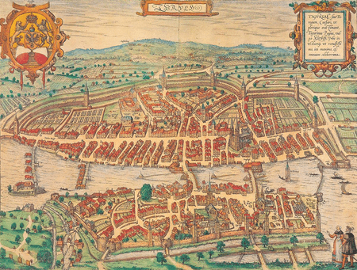

Zurich, Switzerland's largest city, is a vibrant metropolis known for its perfect mix of old-world charm and modern sophistication. Set along the shores of Lake Zurich with the Swiss Alps as a backdrop, the city boasts world-class shopping on Bahnhofstrasse, a rich cultural scene, and historic landmarks like the Old Town and Grossmünster Church. As a global financial hub, Zurich offers a dynamic blend of arts, dining, and nightlife, making it a top destination for both leisure and business travelers.
Zürich has been continuously inhabited since Roman times. The vicus of Turicum was established in AD 90, at the site of an existing Gaulish (Helvetic) settlement. Gallo-Roman culture appears to have persisted beyond the collapse of the Western empire in the 5th century, and it is not until the Carolingian period.
